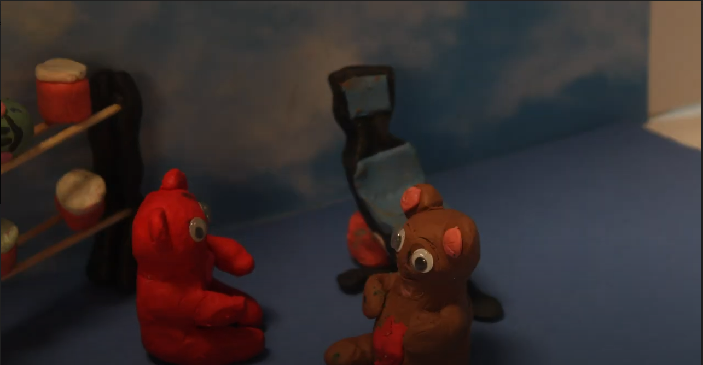
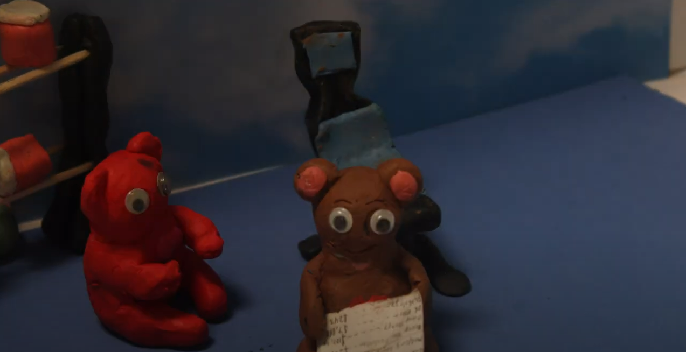
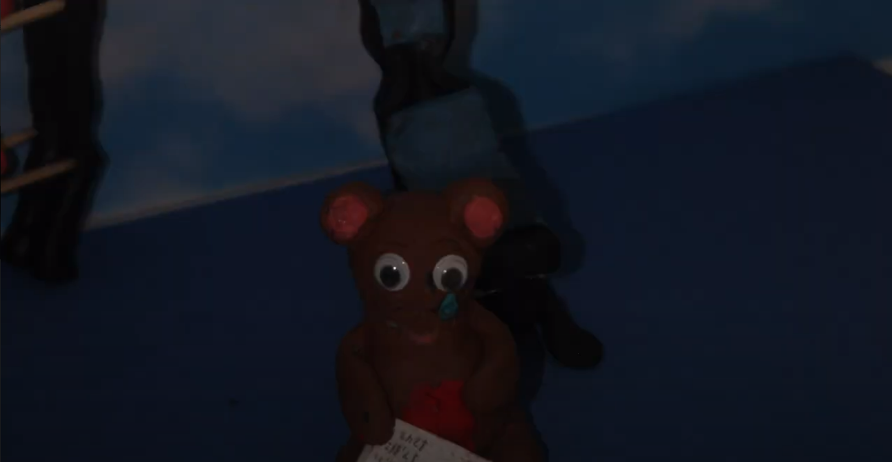

The brown bear patient goes to the hospital to get heart surgery and is operated on by the surgeon frog. The surgery is completed successfully, and the bear feels much better as a result. When the nurse (red bear) comes into the room and helps the patient become comfortable, she gives the bill for the surgery to the patient, who happily takes it, not noticing the hefty price he must pay. When the patient opens the bill, the happiness from his face drains away, and the patient is left sad, having to pay a significant amount of money to cover the cost of his necessary heart surgery, though he does not have enough money to cover the costs.
I worked on all of the scenes in the film as we had to restart our project and reshoot the whole film. These scenes involved the bear getting surgery by the frog cardiac surgeon, the bear receiving the medical bill from the red bear nurse, and the bear opening the bill and feeling sad about its high medical debt.
  
input.buttonA.onEvent(ButtonEvent.Click, function () {
light.setAll(0xffffff)
brightness_click += 20
light.setBrightness(brightness_click)
})
input.buttonB.onEvent(ButtonEvent.Click, function () {
light.setAll(0xffffff)
brightness_click += -20
light.setBrightness(brightness_click)
})
let brightness_click = 0
brightness_click = 0
I used the Dragonframe Software to shoot the frames for the film by using the onion-skin, live toggle, and capture features on the camera board. I also used the Crickit hardware coded with the MakeCode Adafruit software for the various lightings of the scenes, in which I covered the background with cardboard boxes and held the Crickit over the scenes, changing the brightness of the light by pressing the buttons. The happy scenes were bright, while the sad scenes were dark and gloomy. When button A on the Crickit is pressed, the brightness of the light increases by a paramter of 20; when button B is pressed, the brightness of the light decreases by a parameter of 20. As a result, the brightness of the light can properly be increased and decreased gradually without missing any important stages in brightness.